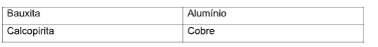
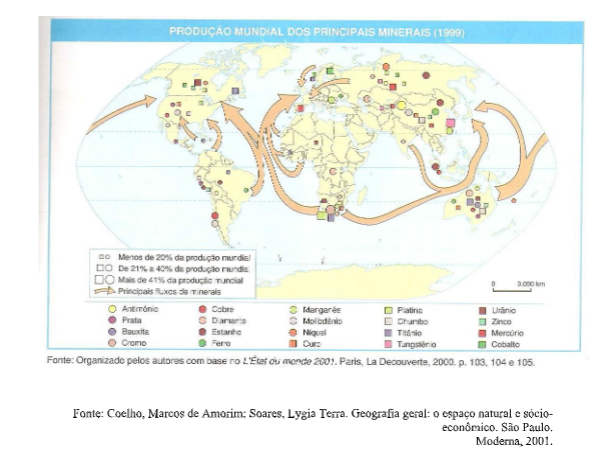
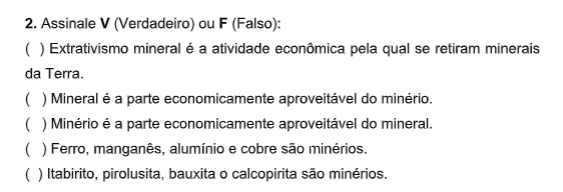
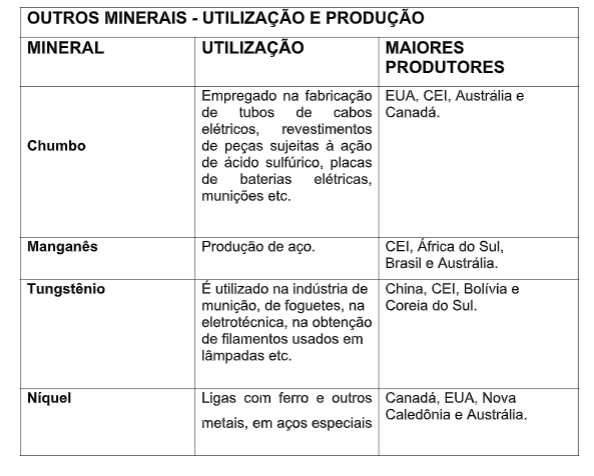
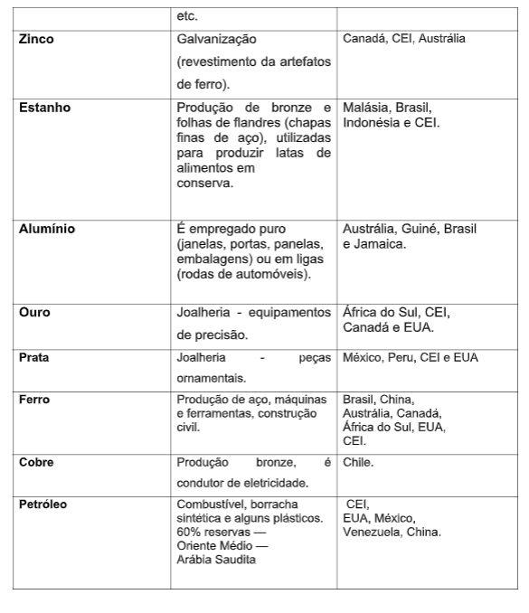
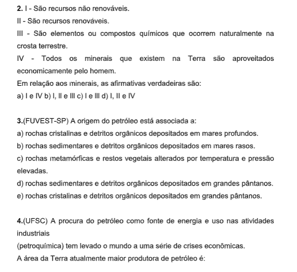
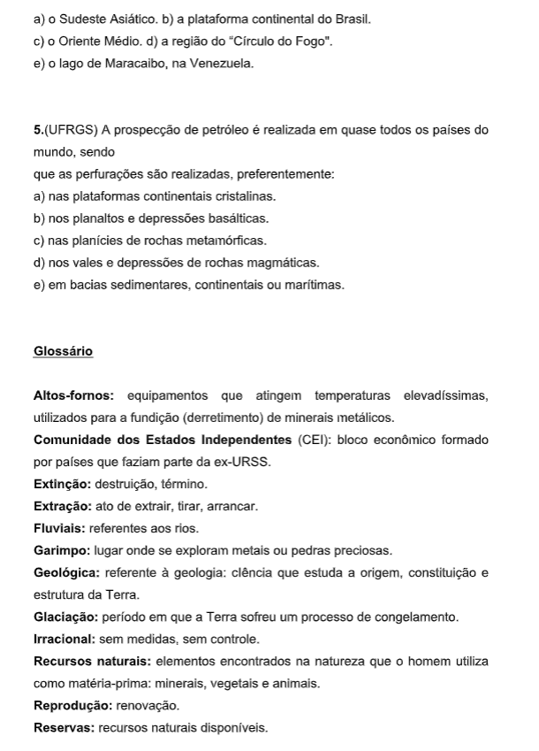
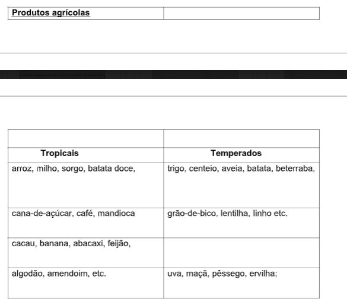
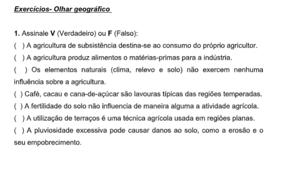

Capítulo 4: A Velha ordem mundial / Nova ordem mundial
Questão:Como o mundo se subdividiu do ponto de vista político, econômico e social, após a 2° Guerra Mundial?
Contextualizando – A Indústria Calçadista e a moda na velha ordem mundialA primeira metade dos anos 40 foi marcada pela Segunda Guerra Mundial e pela primeira grande entrada das mulheres no mercado de trabalho, ainda que por necessidade e por pouco tempo. Quase todo o couro disponível foi para o esforço de guerra, de modo que os materiais mais comuns para os sapatos passaram a ser tecido, madeira, cortiça, ráfia e… couro de cobra. Das décadas anteriores, Mary Janes e Oxfords continuaram na moda, em especial para as atividades do cotidiano. Como o náilon também estava em falta, muitas mulheres, em especial as mais jovens, começaram a usar sapatos com meia soquete, dando origem a um conhecido look colegial (como o que Shirley Temple usa em O Solteirão Cobiçado, de 1947). No final da década, o Oxford com salto se tornou popular. Foi nos anos 40 que surgiram os peep toes, aqueles sapatos com uma pequena abertura na ponta, deixando visíveis apenas dois dedos. Várias pin-ups da época, tanto de carne e osso quanto ilustradas, podem ser vistas usando peep toes. Para os homens, pouco mudou. O sapato de dois tons se tornou um dos favoritos, enquanto nas horas de descanso a melhor opção era um chinelo fechado (ou loafer). A tecnologia desenvolvida na guerra ajudou a tornar os sapatos mais duráveis e resistentes.
 A NOVA ORDEM MUNDIAL
Como se caracteriza a nova ordem mundial? • peIas desigualdades de desenvolvimento econômico e social (países desenvolvidos e países subdesenvolvidos); • pela competição econômica e a formação de grandes blocos econômicos; • pelo domínio militar mundial dos EUA, testado na Guerra do Golfo. Essa nova ordem, denominada multipolar, substitui a antiga ordem bipolar, que se caracterizava pela: • oposição entre o capitalismo e o socialismo; • competição militar entre os Estados Unidos e a URSS e seus aliados.
CAPITALISMO X SOCIALISMO - A GUERRA FRIAPara as gerações que nasceram nas décadas de 1980 e 1990 fica difícil imaginar um mundo dividido entre dois sistemas econômicos, opostos e inimigos. Mas agora que você já estudou as características do capitalismo e do socialismo, pode perceber que a convivência desses dois modos de produção era praticamente impossível. Por isso, tivemos um período de quase cinquenta anos, longo o suficiente para que o mundo vivesse um dos mais tensos e complicados conflitos que já aconteceram na história da humanidade. Uma guerra sem que jamais houvesse um confronto direto entre os dois principais inimigos.
UM MUNDO BIPOLARPela primeira vez, o mundo ficou dividido entre dois sistemas opostos. Os dois lados lutavam para impor seu modo de produção: era o capitalismo norte-americano (Oeste) versus o socialismo soviético (Leste). Foi quase cinco décadas de disputas entre os dois blocos, época em que foram criados arsenais bélicos e nucleares que a qualquer momento poderiam destruir a humanidade. Para entender o mundo de hoje, é importante conhecer esse período muito especial da história, marcado pelo conflito Leste-Oeste.
Para entednder a ordem mundial atual, é necessária recordar a velha ordem mundial de 1945 a 1990, marcada pela oposição entre União Soviética e Estados Unidos em periodo chamado de Guerra Fria-conflito ocorrido neste periodo no campo ideológico;não houve embate militar declarado e direito entre os Estados Unidos e URSS. Após, segunda guerra mundial entre as duas grandes potências.O mundo bipolar.Naquele período, em que havia uma oposição entre o socialismo soviético e o capitalismo norte- americano, divisão do mundo era a seguinte: primeiro mundo, ou os países capitalistas desenvolvidos, segundo mundo, ou países socialistas, e terceiro mundo, ou paises capitalistas subdsernvolvidos.
Porém, com a crise do socialismo e, consequentemente, o fim da Guerra Fria que terminou com a queda do Muro de Berlim, em 1989, seguida pela desintegração da URSS dois anos depois, iniciou-se uma nova ordem mundial.Os regimes econômicos, sociais e politicos o socialismo e o capitalismo foram implantados pela primeira vez em 1917, na Rússia, a maior das repúblicas da antiga União das Repúblicas Socialista Soviética (URSS),criada em 1922.O modelo desse regime na antiga União Soviética era marcado pelo controle por parte do Estado dos setores produtivos da economia, isto é, o agropecuário, o industrial, o comércio e os serviços. Dessa forma, as atividades econômicas do país eram desenvolvidas, em sua quase totalidade, por empresas estatais, cujo funcionamento obedecia a uma rígida planificação definida pelos órgãos do Estado existente para desenvolver esse trabalho.Essa planificação estabelecia, por exemplo, quais os bens e serviços que as empresas estatais deveriam produzir para atender as necessidades de consumo da população, bem como os preços a que esses bens e serviços seriam vendidos ao consumidor.
O CapitalismoNo regime social e econômico, ao contrário do socialista, as astividades econômicas são desenvolvidas, em sua quase totalidade, por empresas privadas ou particulares dentro do contexto: - Da livre iniciativa, pois são elas que decidem quais os bens que irão produzir, estimuladas pelo desejo de obtenção de lucro ao vendê-los no mercado. - Da livre concorrência, o que determina que as empresas, para conseguir vender seus bens e serviços, precisam ofertá-los no mercado com preços e qualidade pelo menos similares aos de outras empresas. Observe os planisfério abaixo : Busque identificar os países capitalistas desenvolvidos, os paises do regime socialista e alguns países capitalista subdesenvolvidos, busque na internet a localização desses países.
 A DEFINIÇÃO DA ORDEM MUNDIAL BIPOLAR NO PÓS-GUERRAA Segunda Guerra Mundial (1939-1945) foi um conflito de maior abrangência do século XX, pois dele participam, de forma direta ou indireta, vários países, localizados em diferentes continentes, dando apoio a um dos blocos em confronto: O Eixo, composto pela Alemanha, Itália e Japão, e os aliados formados pelo Inglaterra (Reino Unido), Estados Unidos, França e a antiga União República Socialista Soviética.
Para saber mais Em seu material, e procure fazer um resumo ou esquema do aprendido até agora neste capítulo. Lembre-se: a melhor maneira de fixar a matéria é escrevendo os pontos principais que foram abordados, e refletindo sobre os conceitos.
O DESENVOLVIMENTO E O SUBDESENVOLVIMENTOAtualmente, os países do mundo desenvolvido têm sido chamados de países do Norte e os países do mundo subdesenvolvido, de países do Sul. Essa classificação explica-se pela posição geográfica dos países no mundo. Observe no Mapa que os países desenvolvidos, com exceção da Austrália e Nova Zelândia, localizam-se predominantemente no hemisfério Norte, Para saber mais Em seu material, e procure fazer um resumo ou esquema do aprendido até agora neste capítulo. Lembre-se: a melhor maneira de fixar a matéria é escrevendo os pontos principais que foram abordados, e refletindo sobre os conceitos. enquanto os países subdesenvolvidos localizam-se predominantemente no hemisfério Sul.
DESENVOLVIMENTO E SUBDESENVOLVIMENTO  ÍNDICE DE DESENVOLVIMENTO HUMANO — IDHÉ considerado o indicador socioeconômico mais amplo e mais completo porque leva em consideração três aspectos: a expectativa de vida, o grau de escolaridade e a renda per capita. O IDH é uma média dos valores entre estes três aspectos. Quanto mais próximo de 1, melhor o IDH de uma nação. Analisando e comparando esses indicadores, é possível classificar os países em ricos e pobres, desenvolvidos ou subdesenvolvidos, com elevado, médio ou baixo IDH.

COMÉRCIO MUNDIAL
Na época colonial, valia a lei do mais forte, em que o monopólio exercido pelas metrópoles prejudicava as transações comerciais das colônias. Somente após a Segunda Guerra Mundial, começaram as discussões para criar uma entidade que regulamentasse o comércio em todo o mundo, evitando favorecimentos e protecionismos. Comércio — A Organização Mundial do OMC é uma organização internacional, criada para regular, organizar e fiscalizar as trocas comerciais e tem por princípios básicos: A Não Discriminação entre seus membros; Acesso aos mercados em igualdade de condições;
Concorrência leal entre os países membros. A COMPETIÇÃO ECONÔMICA E A FORMAÇÃO DE GRANDES BLOCOS ECONÔMICOSPor que o setor industrial vem sofrendo grandes modificações nos últimos anos? Quais são os setores industriais mais desenvolvi dos?
O setor Industrial vem sofrendo grandes modificações nos últimos anos, em função do desenvolvimento técnico-científico. Alguns países possuem o domínio de tecnologias de ponta, ou seja, tecnologias complexas e sofisticadas, resultantes de grandes avanços na pesquisa científica.
 